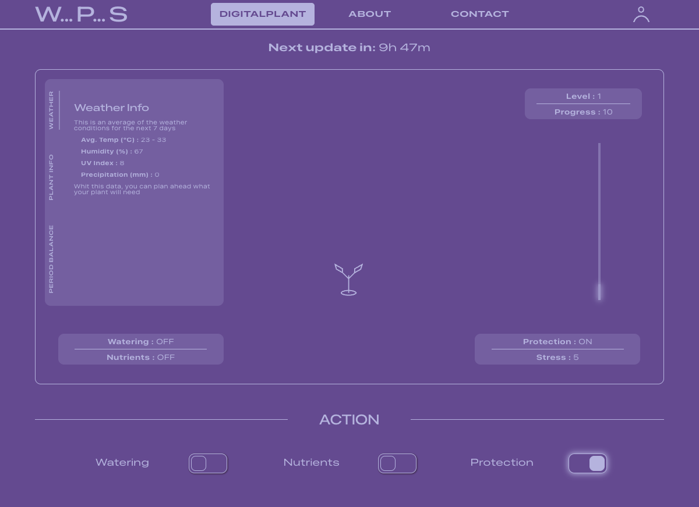
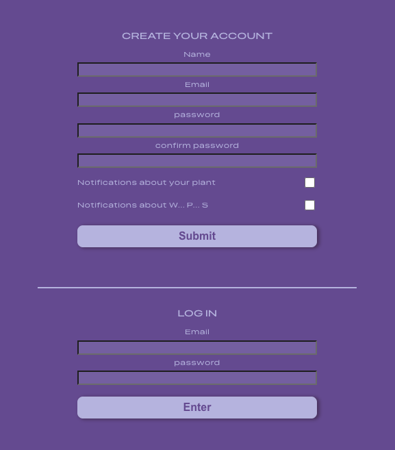
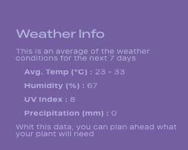
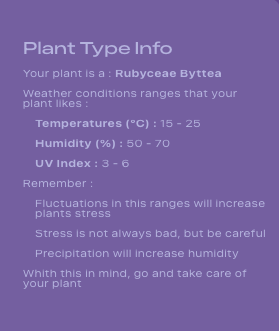
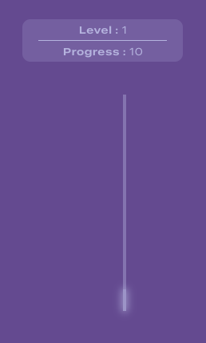

DIGITALPLANT
Visit Web SiteWhat is it?
DigitalPlant is a Tamagotchi-style web app built to host your digital plant and help you take care of it.
You register, choose a plant type, and from that moment your plant is alive. The app fetches live weather from your location, compares it against your plant's ideal conditions, and calculates whether your plant is thriving or struggling. You can intervene by watering, adding nutrients, enabling protection, kind of what you would normally do with a real plant.
The result is a dynamic, data-driven experience that updates continuously and keeps the user engaged through real consequences.

Why it's interesting technically?
There are some complex features going on here:
- It pulls live external data (real weather from Open-Meteo API)
- It runs that data through a custom balance engine in the backend
- It compares weather against plant-specific tolerance ranges
- It turns user actions into measurable state changes
- It updates continuously over time, not just on demand
A nice combination of: external data + backend logic + user input + time-based progression.
Quick software architechture overview
Browser (React + Vite)
Axios + JWT
Express API (Node.js)
Mongoose
MongoDB Atlas
HTTP
Open-Meteo Weather API
The frontend handles display and user interaction. The backend handles all logic — weather fetching, plant calculations, and state updates. The two communicate through a REST API secured with JWT authentication.
FEATURES BREAKDOW
Authentication
JWT-based login and registration. On app load, the token is verified before any plant data is fetched. Once authenticated, the full experience unlocks — plant display, controls, and the timer that triggers periodic updates.
Why JWT: stateless authentication — the server doesn't need to store session data. The token carries the user's identity and is verified on every protected request.

Weather + Geolocation
The app uses the browser's native geolocation API to get the user's coordinates. Those coordinates are sent to the backend, which fetches a 7-day forecast from Open-Meteo and returns averaged values:
- Max / min temperature
- Humidity
- UV index
- Precipitation
Why Open-Meteo: free, no API key required, reliable forecast data. Ideal for a project at this stage.

Plant Type Intelligence
When creating a profile, the user chooses a plant type. Each type has defined tolerance ranges for temperature, humidity, and UV radiation. The app doesn't just show weather data — it compares it against what the specific plant actually needs.
This is what makes the simulation meaningful rather than decorative.

Action Controls
Three toggles give the user direct influence over the plant's state:
- Watering — hydration
- Nutrients — periodic boost
- Protection — shields against extreme conditions
Each toggle immediately updates local state, sends a POST request to the backend, and feeds into the balance engine's next calculation. This is the "player input" layer of the simulation.

Balance Engine
The most technically interesting part of the app. Lives in plantsController.js on the backend.
POST /api/plant/balance receives weather averages, user plant state, and plant type rules. It computes:
- Temperature balance
- Humidity balance
- Radiation balance
- Action effectiveness
And outputs:
- Progress delta
- Stress level
- Level changes
- Recommendations
Key behavior:
- Progress updates every 12 hours
- Hit 100 progress → level increases
- Drop to 0 → level can decrease
- Recommendations are generated dynamically from balance results
Why in the backend: keeping this logic server-side means the user can't manipulate the simulation from the browser. It also keeps the frontend clean — it displays results, it doesn't calculate them.


TECH SPECS
Stack selected
| Tool | Role | Why |
|---|---|---|
| React + Vite | Frontend | Fast dev workflow, component-based UI |
| React Router | Navigation | Client-side routing without page reloads |
| Axios | HTTP client | Cleaner than fetch, handles JWT header injection automatically |
| JWT + localStorage | Auth | Stateless, simple to implement for this scale |
| Express + Node.js | Backend API | Familiar stack, aligns with bootcamp training |
| MongoDB + Mongoose | Database | Flexible document model fits the plant state structure |
| Open-Meteo API | Weather data | Free, no key required, reliable |
| react-geolocated | Geolocation | Handles browser permission flow cleanly |
Data flow end-to-end
- User logs in
- JWT token stored in localStorage
- Plant data fetched from GET /api/plant/plant-info
- Geolocation requested from browser
- Weather fetched from GET /api/plant/weather?lat=...&lng=...
- Plant type fetched from GET /api/plant/plant-type-info
- All data passed to Balance Engine
- Balance results displayed on main screen
- Timer triggers refresh every 12 hours
- User toggles action controls
- POST /api/plant/action → Balance Engine recalculates
- UI updates with new state